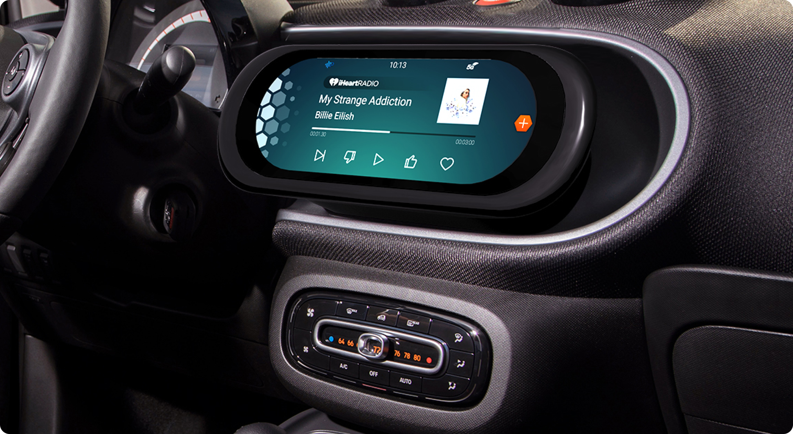
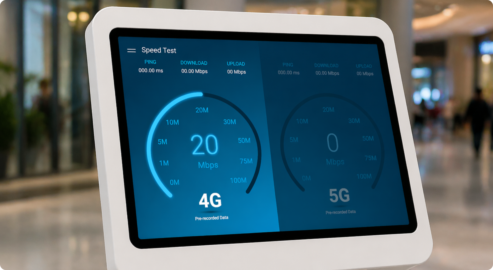
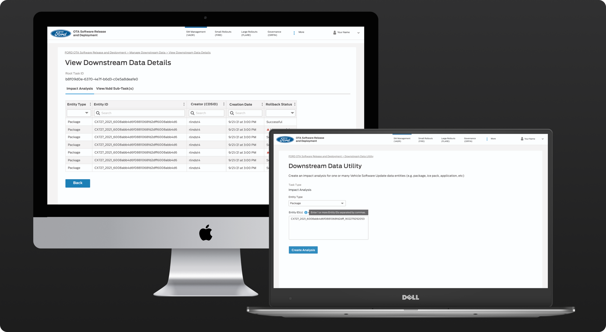
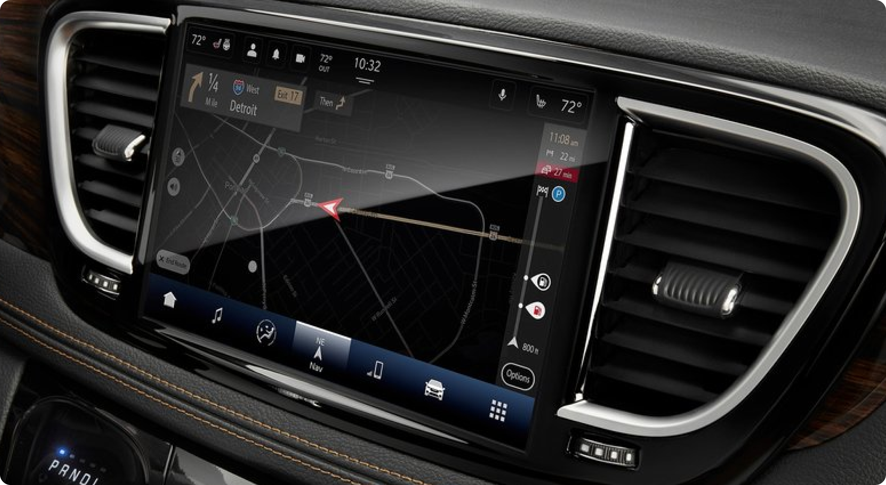
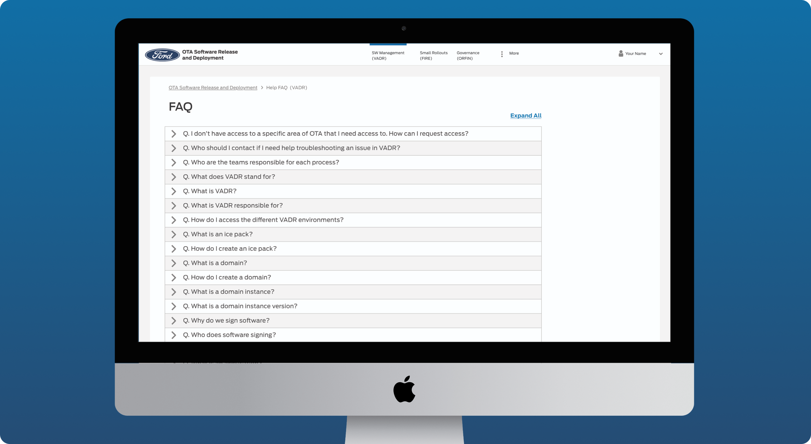

Harman and Samsung partnered to develop a conceptual infotainment system for the Smart Fortwo vehicle.

Harman partnered with AT&T to create an interactive demo illustrating the performance differences between 4G and 5G network speeds.

The Downstream Data Utility is a new feature designed for Ford’s internal Over-the-Air (OTA) updates management system.

UConnect 5 is Stellantis’ next-generation in-vehicle infotainment system, designed for use across multiple Stellantis brands, including Maserati, Jeep, Fiat, and others.

The FAQ page was designed to support Ford’s internal Over-the-Air (OTA) Updates site.